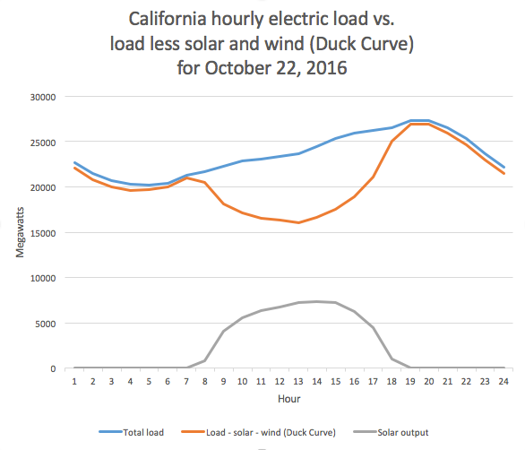

Electricity providers have traditionally had to manage peaks in electric use. On hot days there would be a peak in the afternoon as air conditioning caused high demand. There can also be peaks in the morning and early evening as people get ready for work or come home, turn on HVAC systems and lights, and cook dinner.
The traditional pattern of peak demand is shifting in places where solar power is becoming significant. The midday peak can become the lowest net demand time period, as that's when the sun is shining. However, just as the solar power tapers off in the evening, people are arriving home and turning on appliances. This leads to a rapid rise in net electric demand, forming a curve that looks a bit like the profile of a duck sitting on water (orange line):
(Via Wikipedia, credit: ArnoldReinhold - Own work based on data from caiso.org, CC BY-SA 4.0, https://commons.wikimedia.org/w/index.php?curid=52529738)
On the next page, 'Explore the Data', you will find a tool to see real data about my electricity use at my house, collected using an IotaWatt home energy monitor. It shows the power used during each half-hour period of the day, averaged across a whole month so that we can see a trend. The superimposed solar generation curve (simulated data, yellow) is added so that we can see how well my personal electricity use matches the theory and how solar would impact the grid, given my electric load profile.
This site uses a Java back end and an Angular/SVG front end, hosted with Elastic Beanstalk and S3. The Java back end provides an API that presents the data in a more useful way for the front end to consume - this includes calls to the emoncms service hosting my IotaWatt data, caching, and calculating the averages across full months. For the front end, I found SVG and Angular to be a great fit - as the data is updated, the chart changes along with it.
Explore the data Explore the source code